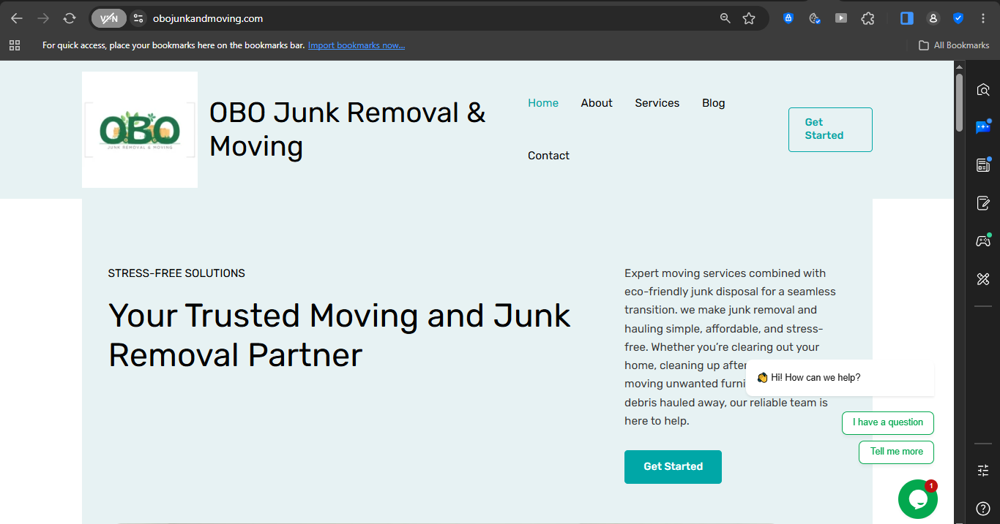

Felix Mbonde Njumbe
Software Engineer • Web Developer • QA & Network Engineering
Location:Southwest Region,
Cameroon
Email: felixmbondenjumbe@gmail.com
Location:Southwest Region,
Cameroon
Email: felixmbondenjumbe@gmail.com
Technology-oriented professional with practical experience in web development, software quality assurance, network architecture and digital content production. Built a business website for OBO Junk Removal using WordPress; designed factory LAN infrastructure using GNS3; and performed cross-browser web validation using Selenium IDE. Also experienced in Canva Pro, Photoshop, InShot and Renderforest for professional visual and video communication.
Additional: ICENEDEV Certificate of Participation, Fight Against Plastic Pollution (2022–2023)
Below is a placeholder preview representing my WordPress work for OBO Junk Removal (Click the image to visit the website):
